NMR Spectroscopy
All forms of spectroscopy deal with interactions of electromagnetic radiation and matter, where matter absorbs or emits radiation. In 1924, Pauli explained hyperfine splitting in some atomic spectra by postulating that certain atomic nuclei behave as spinning particles and therefore have a quantized angular momentum together with an associated quantized magnetic moment, whose vector is parallel or antiparallel to the spin angular momentum vector. In 1946 Bloch et al. at Standford and Purcell et al. at Harvard simultaneously and independently detected resonance of the hydrogen nucleus. The nuclear sping angular momentum, I, is a vector quantity with magnitude given by
|I| = (I ⋅ I)1/2 = ℏ[I(I + 1)]1/2
in which I is the nuclear sping angular momentum quantum number.
An intrinsic property of the nucleus is nuclear spin or spin angular momentum, characterized by the nuclear spin quantum number, I, which can have values of 0, 1/2, 1, 3/2 etc., depending on the nucleus under consideration.
The particles that make up the nucleus (neutron and protons) are called nucleons; as with electrons in atoms, nucleons possess an intrinsic spin. Nucleons of opposite spin can pair, in a similar manner as electrons do. However, only nucleons of the same type can be paired: i.e., protons with protons and neutrons with neutrons. Thus, if a nucleus contains even number of both protons and neutrons with neutrons. Thus, if a nucleus contains even numbers of both protons and neutrons, all the spins are paired and then I = 0.
| Z | A | I | Examples |
|---|---|---|---|
| Even | Even | 0 | , |
| Even or odd | Odd | n/2 | (1/2), (5/2) |
| Odd | Even | n | (3), (1) |
Hydrogen, the simplest nucleus has a single unpaired proton: its large magnetic moment along its relatevely small mass make it the strongest nuclear magnetic dipole moment.
The second nucleus, that of helium, constists of two protons and two nuetrons. The two protons in the nucleus pair up exaclty to cancel their net magnetic effects; and the two neutrons, which have different magnetic moments than the proton, also pair up exactly to cancel their magnetic effects. Thus, the helium nucleus has no net magnetic dipole moment. Due to this pairing of proton and neutron, most atomic nuclei have no magnetic dipole moment and are, therefore, not suitable for NMR. Nitrogen constitutes one of the most important elements in chemistry and in the life and materials sciences.
Both naturally occurring nitrogen isotopes are NMR active: 14N (I = 1) and 15N (I = 1/2) with abundances of 99.63% and 0.37%, respectively.
The Basic phenomenon of NMR Spectroscopy is similar to other forms of spectroscopy, such as visible spectroscopy. A photon of light causes a transition from the ground state to the excited state. In the case of visible spectroscopy an electron absorbs the energy while in the case of NMR spectroscopy the absorbed photon promotes a nuclear spin from its ground state to its state.
NMR spectroscopy differs in a number of important aspectr from other forms of spectroscopy. First, the generation of the ground and excited NMR state requires the existence of an external magnetic field. This requirement is a very important distinction of NMR spectroscopy because it allows one to change the characteristics frequencies of the transitions by simply changing the applied magnetic field strenght. Second, the NMR excited state ha a lifetime that is on the order of 109 times (between milliseconds and seconds in extreme cases this process can take minutes) longer than the lifetime of excited electronic state. This difference in lifetimes follows directly from Einstein's law for spontanueous emission that relates the lifetime of the excited state, τ, to the frequency of the transition, ω:
τ ∝ 1 / ω3
The long lifetime of the excited state implies extremely narrow spectral lines since the ability to define the energy of a transition is proportional to the lifetime of the excited state from Heisenberg's uncertainty principle ΔEΔt ≥ ℏ/2.
NMR spectroscopy differs from IR spectroscopy in that the timescales of the two techniques are quite different. The absorption of infrared energy by a molecule giving rise to a change in vibrational amplitude is an essentially instantaneous process (about 10-13 s), but the NMR process is much slower (about 10-3 s). This difference in timescales between IR and NMR spectroscopy is analogous to the difference between cameras operating at very fast and very slow shutter speeds. The fast camera (IR) takes an instantaneous picture and freezes the action. If two rapidly interconverting species are present, IR spectroscopy records the spectrum of both. The slow camera (NMR), however, takes a blurred, time-averaged picture. If two species interconverting faster than 103 times per second are present in a sample, NMR records only a single, averaged spectrum, rather than separate spectra of the two discrete species. Because of this blurring effect, NMR spectroscopy can be used to measure the rates and activation energies of very fast processes. In cyclohexane, for example, a ring-flip (Section 4.6) occurs so rapidly at room temperature that axial and equatorial hydrogens can’t be distinguished by NMR; only a single, averaged 1H NMR absorption is seen for cyclohexane at 25 °C. At 290 °C, however, the ring-flip is slowed down enough that two absorption peaks are seen, one for the six axial hydrogens and one for the six equatorial hydrogens. Knowing the temperature and the rate at which signal blurring begins to occur, it’s possible to calculate that the activation energy for the cyclohexane ring-flip is 45 kJ/mol(10.8 kcal/mol).
In the case of small organic molecules, linewidths less than 1Hz are easily attainable. Thus it is possible to detect small changes in absorption energies that arise from subtle differences in the enviroment of a nuclea spin. The persistence of the excited state also facilitates multi-dimensional spectroscopy, the cornerstone of modern multi-nuclear NMR studies on biopolymers, by allowing the resonance frequnecy information associated with one spin to be passed to another (it permits to do "tricks" with excited state that give rise to many and useful NMR experiment). Finally, the long lifetime of the excited state permits the measurement of molecular dynamics over a wide range of time scales.